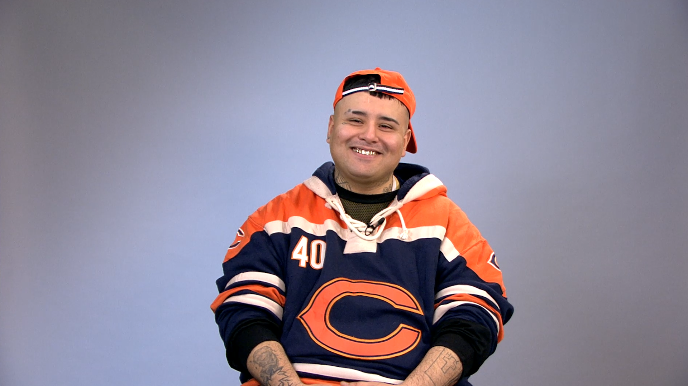

FAN PAGE DEL DOCTOR OFICIAL
Inicio
(Usted se encuentra en esta seccion)
Videos
Fotos
Redes Sociales
Contacto

¡Hola LADIES AND GENTLEMAN! Esta es una pagina dedicada exclusivamente al mejor trapper de buenos aires west side zona oeste, El Doctor. ¡Espero el apoyo de todos ustedes!